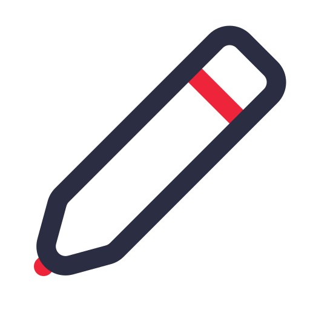
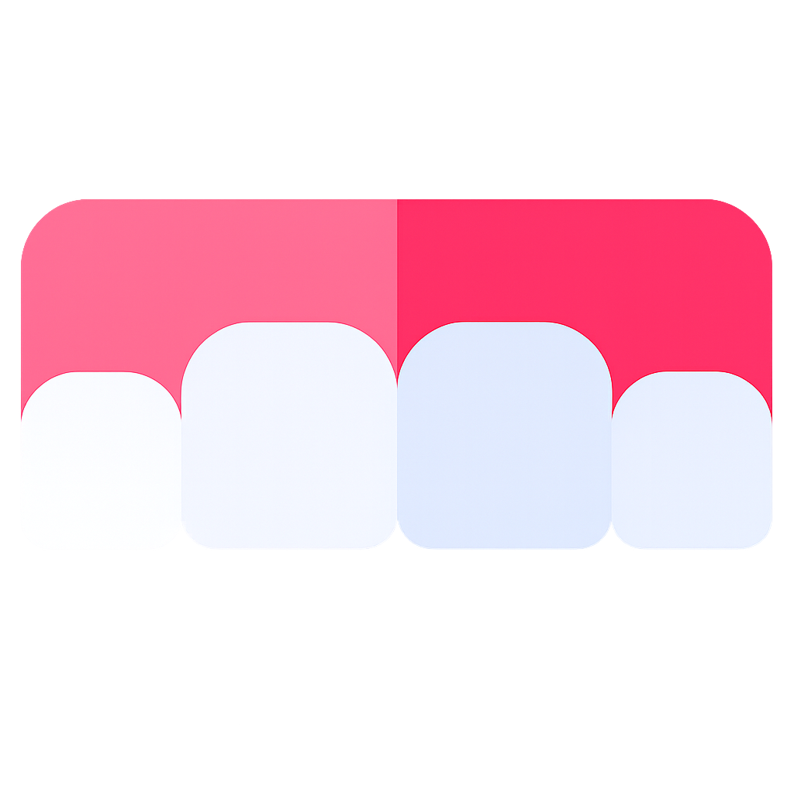
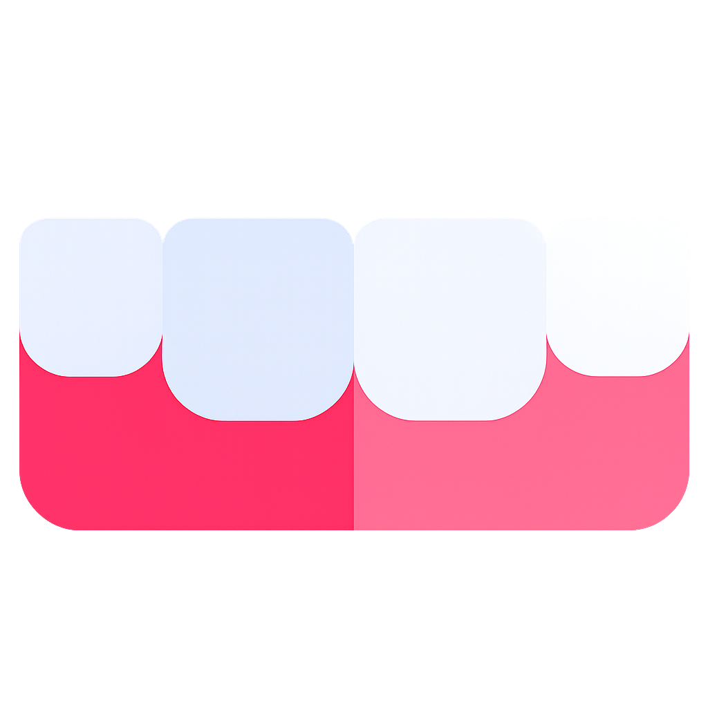
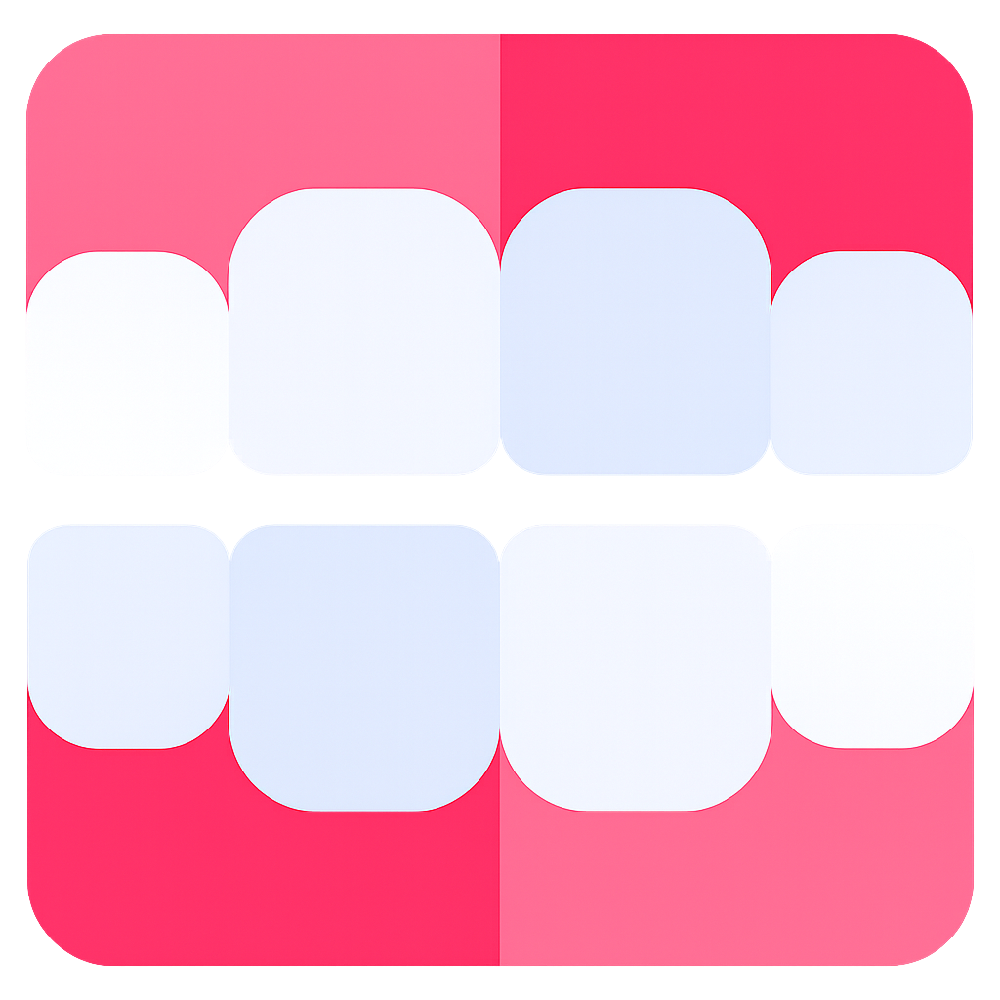

Select a patient to view scan records
Disconnected
New Scan
3D Scan Preview
Scan model will appear here
Back
Patient

Save

Maxilla

Mandible

Occlusion
Complete
Disconnected
Intraoral
Limit stopped
Approaching limit
Unscanned areas
Start
Exit
0.75
0.60
0.45
0.30
0.15
0.00
mm
Frame: 0
Live Camera
Camera feed placeholder
Cancel
Processing scan data
Calculating image data before moving to the next step...
View Model
Maxilla
100%
Mandible
100%
Close
Rescan
Add Patient
Patient ID
Name
*
Date of Birth
Gender
—
Male
Female
Other
Remarks
Cancel
Create
Edit Patient
Patient ID
Name
*
Date of Birth
Gender
—
Male
Female
Other
Remarks
Cancel
Save
Delete Patient
Are you sure you want to delete
? This action cannot be undone.
Cancel
Delete